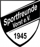
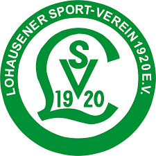
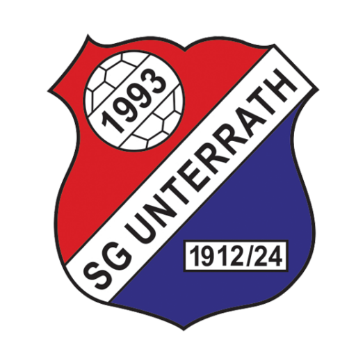

Willkommen beim Best of Cup
🔥 Die nächsten Spiele
🏆 Unsere "Europa League"
Hallo zusammen! Herzlich willkommen auf der offiziellen Seite des Best of Cup. Dies ist unser überregionales Turnierformat für ambitionierte Jugendteams.
Hier finden spannende Begegnungen statt, bei denen der Spaß, die Entwicklung der Kinder und fairer Wettbewerb im Vordergrund stehen.
👥 Die Teilnehmer
-

SF Vorst -

SV Lohausen -

SG Unterrath -
 1. FC Mönchengladbach
1. FC Mönchengladbach